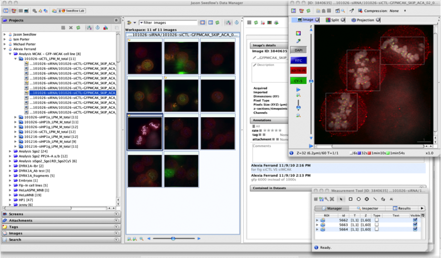
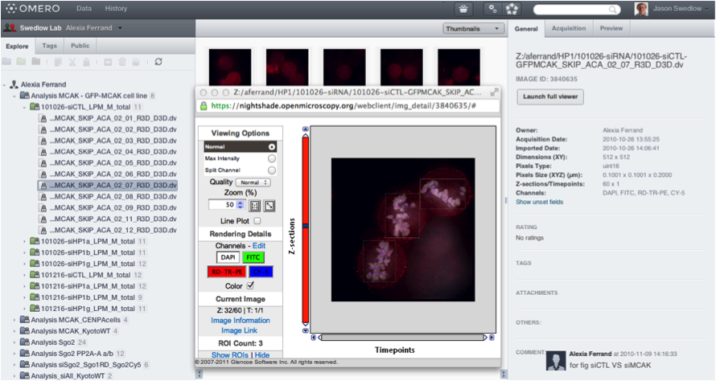
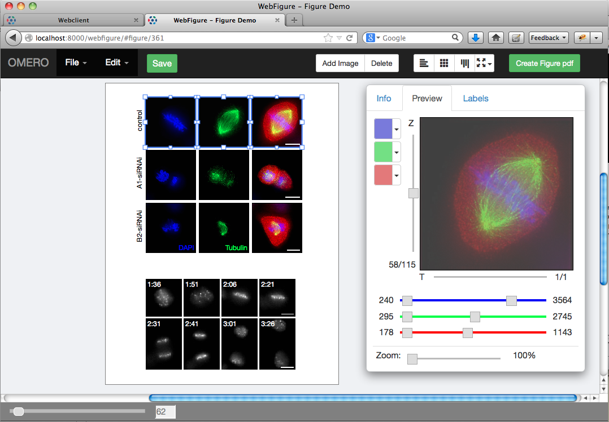

OMERO.figure
Technique Tapas
5th November 2014
Will Moore
OMERO.figure
- OME & OMERO
- Figures
- Demo
- Bonus Features!
OME
Open Microscopy Environment
A typical workflow

Interoperability

OMERO
OMERO is a server with clients

OMERO.insight & OMERO.web
|  |  |
Figures
What's in a Figure?


Porter 2007
Problems
- SLOW
- Can't change images after imported
- Manual layout
- Loss of Metadata (pixel size, channel names etc)
- No links between Figure and original images
Demo...
Add images
See Older Demo on youtube
Layout
See Older Demo on youtube
Sync Channels, Levels, Zoom, Rotation, Time points, Z-index, Cropping
See Older Demo on youtube
Add Labels
See Older Demo on youtube
Key Features
- Each ‘panel’ is an independent viewer
- Select multiple panels to co-edit
- Full undo/redo
- Save as orig file (json)
- URL per file - bookmark, share, 'publish' etc
- Script to create PDF from json
- "Template" for figures